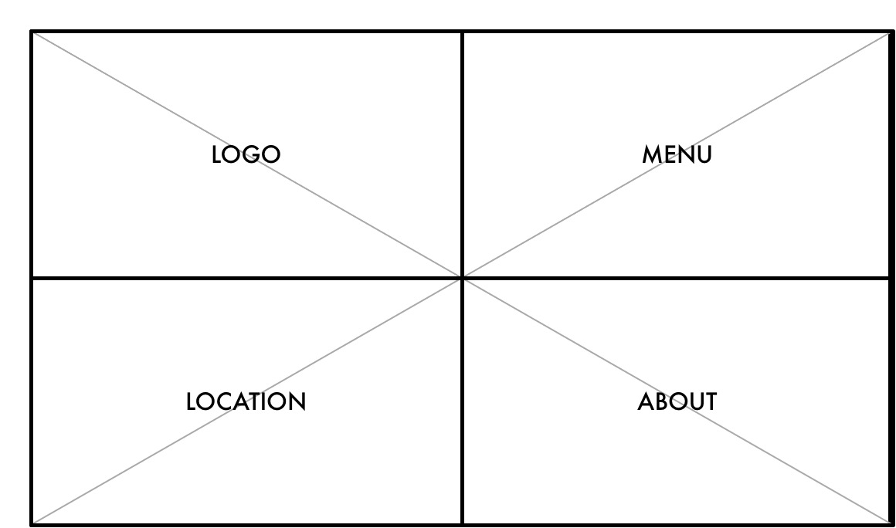
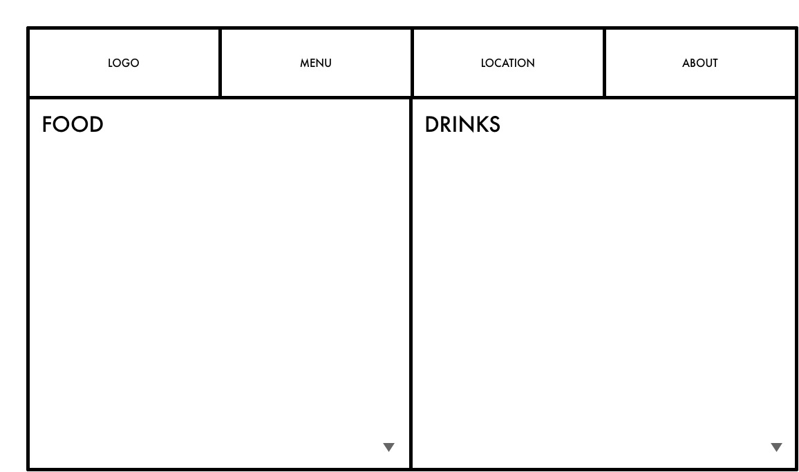
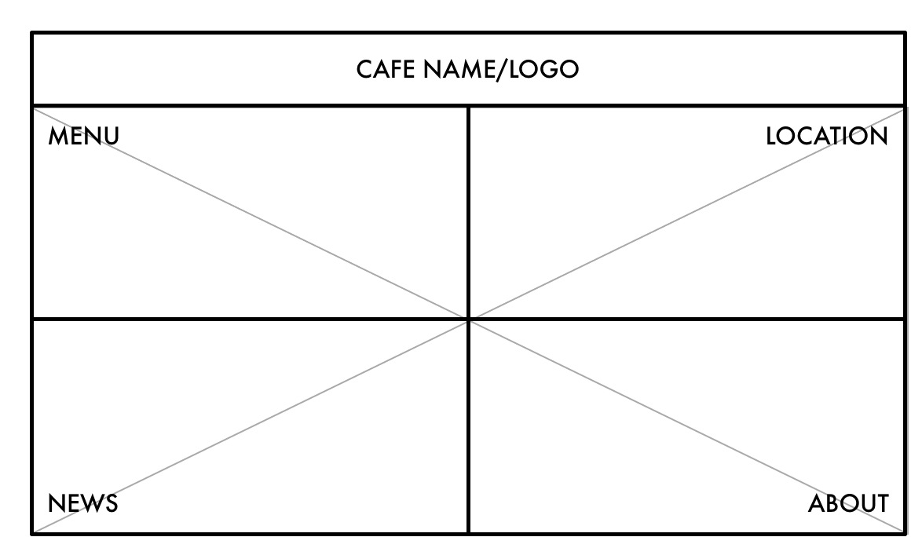
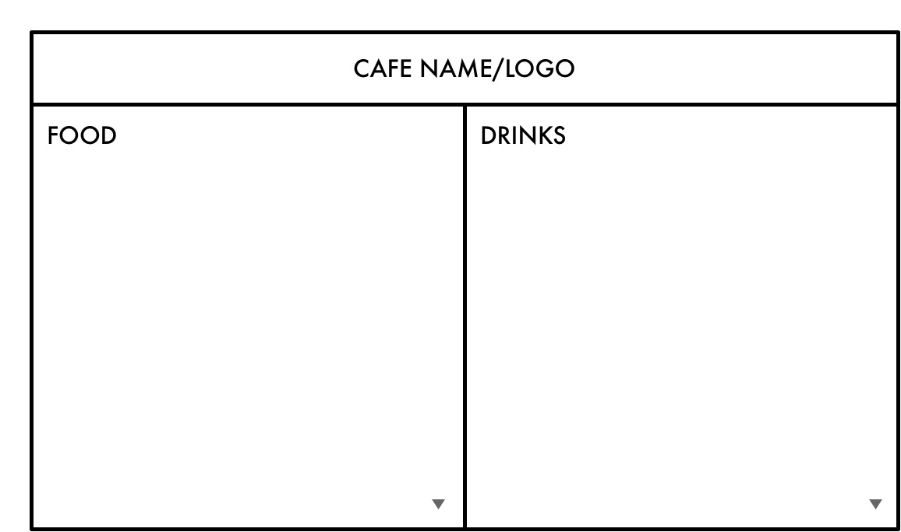

I want to create a website for a cafe, so I focused on restaurant websites. My favorites are the ones for Colonia Verde NYC and Whitmans NYC.
I like Whitman's site aesthetically, but for me, the homepage is out of sync with the rest of the sections, which do use space, size, and balance effectively.
By using a delicious-looking picture of a burger and the chalkboard-style logo as the focal point, they establish at once that Whitmans is a good place to get burgers. The small tagline lockup in the upper left corner validates that. But neither of those focal points are clickable, or navigate to other parts of the site.
The navigation in the upper right corner is next, and is set in much smaller type. I think the Home button is unnecessary since we are already Home, and a logo in the upper lefthand corner would be much more effective. Clicking on the next item, About, scrolls down the About area of the site. This is when I realized that scrolling would have brought me to the other sections of the site, and all that clicking was unnecessary. A call to action for scrolling on the homepage would have solved that.
The site improves from here on. The sections within the site are designed on a very clean grid and the hierarchy of information is clearer than on the Home page. Headings and subheadings are used effectively and consistently throughout the sections, making for easy recognition, and the pretty type design makes for easy reading. The logo actually appears on the upper right corner in these sections, navigating back to the Home page when clicked on, as it should.
What caught my eye about this site was the beautiful flat design. Restaurant websites need to convey a sense of place and the menu, and Colonia Verde does that by giving equal importance to all of that using space, size, and balance. I think the landing page (more like a title page really) and intro are unnecessary, and that the Home page should be the first one you see. Although I think they should include the restaurant name on the Home page, perhaps on the same line as the address, since the landing page is the only one with the restaurant name on it. A visitor might forget where they are!
Colonia Verde uses a video reel as the background, and it's treated like white space. All of the text is the same size and balanced on the page. A white border frames the site, and all of the action occurs above the fold within this frame.
When you click on a section, you land on a beautiful image that is representative of the content. Steak for the dinner menu, eggs for the brunch. Then you are encouraged to scroll down to access more content if you need to (as if the images didn't already entice you to go!). The click-and-scroll feature, large and beautiful photography/videos, and equally sized text are all used consistently, creating a pleasant and intuitive experience while navigating Colonia Verde's site.
Both sites have similar content, scrolling features, and pretty typography. And after perusing their sites, I now want to eat at both restaurants, so they are both effective.
Colonia Verde makes better use of space, size, and balance, creating an easy-to-follow path, with calls to action that back-up the intended interactivity. Colonia Verde conveys a lot of information by displaying the beautiful videos and imagery, keeping the need for copy to a minimum. The site is fun to interact with.
Whitmans' site could be improved by creating a more enticing homepage that establishes the rules for navigating up front, with a clearer call to action on the homepage that encourages the scrolling feature. Grouping the clickable elements in the upper left corner, and locking up the logo with the tagline in the upper right would also create a better flow. But I think the other sections look nice and convey the essential information.
I am going to create a website for a fictional cafe called La Ventanita (The Little Window). I want the site to be simple and straightforward, just like walk-up window cafes are.
These wireframes are inspired by Colonia Verde's site. The homepage is simply split into 4 panes, like a window, and equal space and size is given to each piece of navigation. I would love for everything to exist within the frame of the "window," like in Colonia's site, since that emphasizes the name and functionality of the cafe itself. An image or video will be the background of the homepage to establish a sense of place.

Clicking on menu in the navigation brings you to the menu page, where everything will be displayed within two columns. A smaller navigation will appear at the top of the "child" pages for easy access to the rest of the site.

This is still inspired by Colonia Verde's site, but with a more traditional location for the restaurant name and logo serving as the focal point. The rest of the page is still split into four panes, with equal weight given to each navigation item.

This menu page is similar to option 1, but the header stays in place. The user will need to click on this header to return to the home page to locate the other navigation items. This helps keep the menu page clean and simple. I intend for everything to stay within the frame of the "window," and scroll beneath the header.
